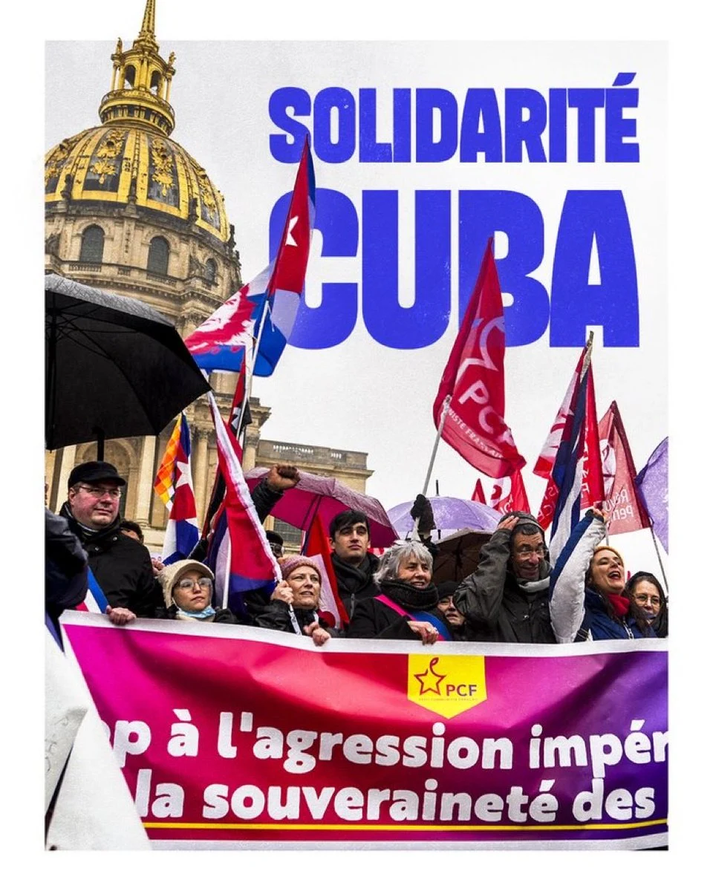

Publication sur X
Cuba. Solidarité face aux coupures de courant
Date de publication sur X · 30 mars 2026
Repères éditoriaux
Le message aborde les pénuries d’énergie et relaie un visuel de solidarité avec Cuba.
Texte de la publication sur X
10 millions de Cubains subissent des coupures de courant. Plus de pétrole depuis janvier. Blocus américain.
Un pétrolier russe arrive avec 730 000 barils. Trump dit que « ça ne le dérange pas ».
Ça ne le dérange pas quand le rapport de force le confronte à ses limites.
#Cuba https://t.co/xXt2EjwkDR

Sources
PCF 79 · @79Parti sur X · AR-0005-TW-2038567697600942105
À lire aussi · L’appel « Debout l’humanité ! » relayé par le PCF 79 · Le lien d’origine